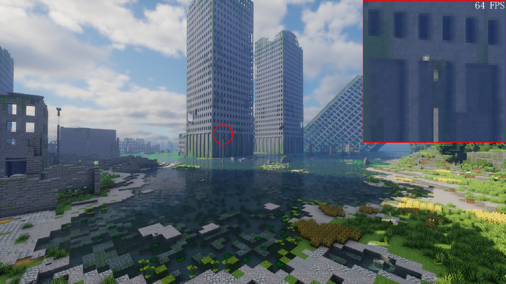
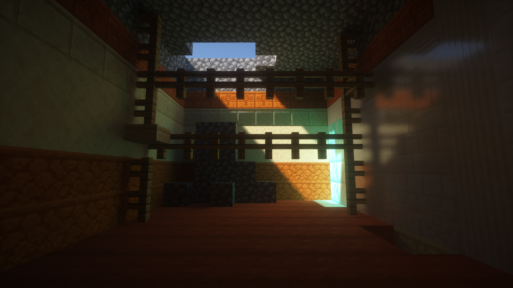
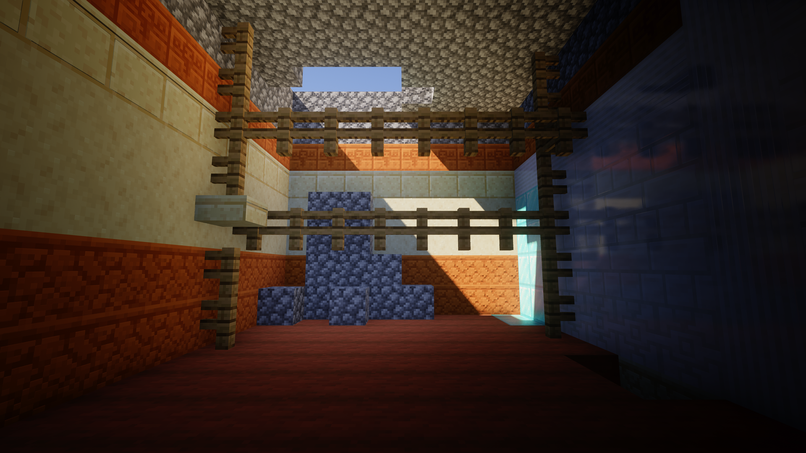
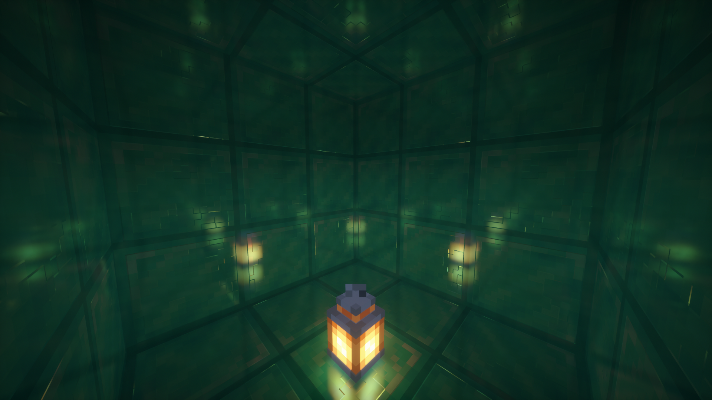
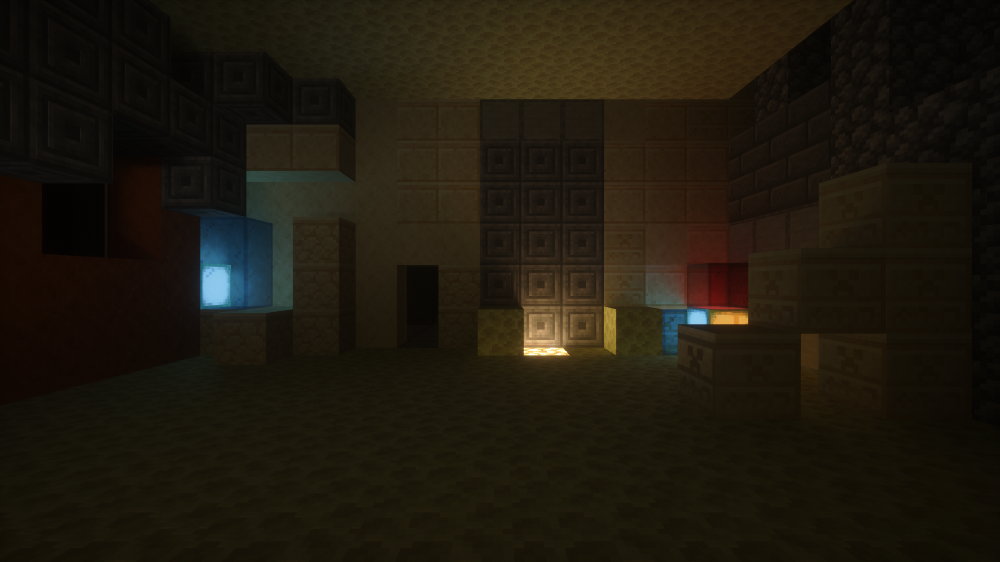
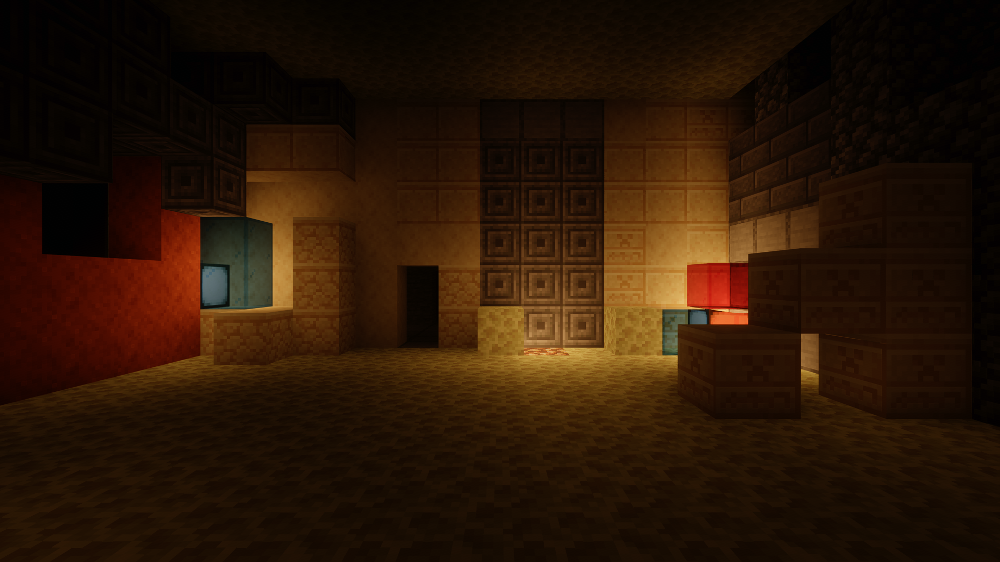

着色器 技术科普
环境光遮蔽
介绍
环境光遮蔽 （Ambient Occlusion ，简称 AO ）是一种广泛用于现代游戏渲染的图形技术，其算力消耗相对较少的同时能带来非常大的画面观感改进，其模拟了现实世界中光线在物体的凹角和接缝中产生阴影的现象。
在现实中，当光线到达物体的凹角和接缝时，由于空间被物体阻挡，光线无法充分照射到一些区域，导致这些区域相对较暗，形成阴影。
在没有环境光遮蔽的情况下，画面看起来像是被均匀的强光照亮，没有阴影和深度。详情可以参考在 Minecraft 中关闭 平滑光照 效果后的一些表现，同时那些不注重画质的手游也有很多缺失此效果，导致画面显得非常扁平。
SSAO
Screen-Space AO ，意为屏幕空间环境光遮蔽 ，是目前业界内应用最广泛的环境光遮蔽技术。SSAO 通过分析场景中各个像素点周围的几何信息来计算该像素点处的遮蔽程度。其计算效率最高，但相对不够精确。
目前常用的环境光遮蔽技术有 SSAO、HBAO 和 GTAO。HBAO 和 GTAO 作为 SSAO 的衍生，能产生更加准确的遮蔽阴影。

{kind=link}
{kind=link}
RTAO
Ray Tracing AO ，意为路径追踪环境光遮蔽 。通过在世界空间光线追踪计算 AO，效果最好的同时性能消耗也最高。
全局光照
介绍
一般来说， 全局光照 （Global Illumination ，简称 GI ）=直接光照+间接光照。全局光照，表现了直接照明和间接照明的综合效果。它有多种实现方法，例如辐照度、光线追踪、光子贴图、光照探针等。当光从光源被发射出来后，碰到障碍物就反射和折射，经过无数次的反射和折射，物体表面和角落都会有光感，像真实的自然光。 全局光照计算量很大。渲染带有全局光照效果的图片，耗时会较长（取决于场景复杂度）。渲染静态图片可以接受这较长的耗时，但渲染视频或者应用到游戏时，要求的渲染时间就要减少很多，于是便有了逆向追踪算法 （即蒙特卡洛算法）。此算法以摄像机视角为基准，仅计算可见的地方，这样就可以在不牺牲质量的情况下提高渲染效率。
Reflective Shadow Maps
Reflective Shadow Maps，简称RSM。它是一种实现全局光照的方式，原理为：将直接光照能够照亮的像素点作为次级光源，让它们照亮以它们为中心的像素。
无全局光照

RSM全局光照

Light Propagation Volumes
Light Propagation Volumes（光照传播体积），是CryEngine3 提出的一种实时的、无需任何预计算的全局光照技术，其在RSM和SH的基础上创造性地提出了使用体素来存储、传播间接光照的方法。 LPV首先将整个场景划分为一个个的小格子（体素），将整个场景离散开来，直接计算每个格子内的光照是不现实的，解决方法是让光照像墨滴一样在这些格子中弥散、传播，从而计算最终到达着色点的间接光照。
Voxel Global Illumination
类似于LPV，Voxel Global Illumination（体素全局光照）也是一个两趟的、实时的全局光照算法，它以体积渲染作为算法核心，将场景通过体素离散化为树状结构并存储光照计算相关信息，并在渲染时通过体素圆锥追踪来计算光照，相比LPV拥有更好的效果。
抗锯齿及相关技术
锯齿
锯齿（Aliasing）现象是由于渲染过程中采样不足而引起的，也被称为走样 。在游戏渲染中，主要会遇到两种类型的走样 ，分别是几何走样和着色走样 。其中， 几何走样即是大众所熟知的传统锯齿现象。
几何走样（Geometric Aliasing）：由于光栅化过程中对几何图形边缘的采样不足而导致的。现代屏幕由像素组成，像素的本质是一个个小方格，因此当尝试表示斜线或曲线时，就会出现锯齿状的走样，使得图形边缘看起来像是生活中的锯齿或是楼梯。着色走样（Shading Aliasing）：由于渲染过程中的采样数不足而引起的。例如在体积渲染中，如果采样数较低，就会导致体积雾和体积云等效果出现闪烁和噪点。
空间抗锯齿
空间抗锯齿技术是针对几何走样问题的传统解决方案，即大众所熟知的传统抗锯齿技术。由于其实现方式，通常会造成不可忽视的性能损耗，同时对于着色走样问题几乎无效 ，因此在目前的游戏中，单独的空间抗锯齿技术已不多见。
比较主流的
空间抗锯齿技术有：FXAA、MSAA、SMAA等，在Minecraft：Java版中，主要实现了其中的FXAA。以下效果评判仅针对
几何走样问题。
FXAA
全称Fast Approximately Aliasing ，中文名快速近似抗锯齿 。通过分析图形边缘，然后混合颜色来减少锯齿。
MSAA
全称MultiSampling Anti-Aliasing ，中文名多重采样抗锯齿 ，属于一种特殊的SSAA（超级采样抗锯齿）。 SSAA即直接将整个画面以高分辨率渲染再缩回，而MSAA仅对图形边缘进行处理。
SMAA
全称Enhanced Subpixel Morphological ，中文名子像素增强抗锯齿 ，是MLAA（形态学抗锯齿）的改进版。 MLAA通过分析图形边缘然后进行平滑处理， SMAA则在此之上进一步发展，使得图像更清晰。
时域抗锯齿
不同于空间抗锯齿的边缘检测处理， 时域抗锯齿使用在多个帧之间进行信息累积和混合的方案。 时域抗锯齿的性能消耗很少，同时基本解决了几何走样的问题，还能解决大部分着色走样的问题。但由于混合了一段时间内的帧， 在动态场景中会不可避免地出现不同程度的鬼影（拖影、残影）和模糊问题 ，是现代游戏中运用最多的抗锯齿技术类型。
时域抗锯齿技术指TAA这一项技术（在此不考虑和空间抗锯齿融合的特殊技术）。 在Minecraft：Java版中，基本所有现代光影都使用的是TAA技术。
TAA
全称Temporal Anti-Aliasing ，中文名时域抗锯齿、时间性抗锯齿 。首先在时间上分散采样点 ，然后将当前帧的渲染结果与前一帧进行比较，以确定物体的运动和变化，之后进行混合以平滑图像并减少锯齿。
无抗锯齿，几何走样和着色走样都很明显

FXAA 4x，解决了部分几何走样的锯齿，对着色走样几乎无效，同时有一些细小的由于简单混合导致的不自然痕迹

TAA，有效解决了几何走样，对着色走样也很有效

技术发展与理解误区
随着硬件的不断发展，现代游戏中会出现更多的模型面数，同时纹理质量也在持续提升。在这种情况下， 空间抗锯齿技术想要解决由于多边形边缘增多而带来的更多画面锯齿问题，需要消耗的性能将会成倍提升（现代硬件甚至仍无法完全驾驭当年一些游戏的MSAA 8x ）。另外，随着实时渲染技术的发展，逐渐出现了着色走样的问题，而空间抗锯齿技术专注于处理图形边缘锯齿 ，对于着色走样带来的闪烁和噪点问题几乎无能为力。因此， 时域抗锯齿技术在现代游戏中几乎是不可或缺的。 然而，总有人因为时域抗锯齿带来的拖影与模糊问题，而认为这是游戏厂商懈怠优化所带来的骗局。实际上，他们仍将锯齿视为传统的几何走样问题，忽视了技术和硬件提升所带来的全新挑战，例如同屏中越来越多且更高精细度的图形边缘，以及全新的着色走样问题。 时域抗锯齿技术的应用是现代实时渲染技术发展的必然趋势，我们不能只仰慕以前游戏画面那种清晰锐利的风格，而忽视了当时渲染技术的落后性。
还有人认为
着色走样是游戏厂商懈怠优化而导致的骗局，然而着色走样问题实际上是现代实时渲染流程中所无法完全避免的，这些人同样忽视了当时渲染技术的落后性。想要不依赖时域抗锯齿来解决着色采样问题的方式，基本就是提高采样数，然而其带来的性能消耗将比空间抗锯齿更高一个数量级。当然也存在一些取巧的解决办法：例如预烘焙方案，但现代游戏大量的动态场景已经导致其不再广泛适用；或者就是直接削弱细节，不过有人真的希望在现代游戏中看到一些类似于古早画面技术的东西吗？
升采样技术
升采样（Upsampling）是一种增加图像分辨率的技术，也分为空间升采样和时域升采样 。现代的升采样技术一般用于先降低分辨率，再进行升采样以回到原始分辨率，来提升性能。
空间升采样在游戏内直接使用较少，如FSR 1.0和NIS，通常只是缩放、插值和锐化等算法。时域升采样一般伴随着抗锯齿进行，如TAAU、DLSS 2.0和FSR 2.0等。在Minecraft：Java版的一些光影中，实现了TAAU。TAAU基于TAA而实现，多帧信息不仅用于抗锯齿，还用于提高图像分辨率。SEUS PTGI中的HRR技术也是类似原理。原生分辨率图像， 由于每个人的光影和设置不同，以下仅供大概参考
65% TAAU，相当于 DLSS 质量模式同等缩放

65% 原始分辨率，无TAAU

光线追踪、路径追踪
::: warning 阅前提示 我们在此讨论的是相对狭义的光线追踪技术，即大众所认知的。如果严格按照光线追踪渲染流程来评判，那么类似于屏幕空间反射等技术也属于光线追踪范畴。 :::
前言：从光栅化到光线追踪
上世纪70年代，
PARC开发了具备8位帧缓冲器的先进绘图系统，标志着光栅化成像技术的诞生。这一技术能够在屏幕上呈现复杂图形画面，为现代计算机图形学的发展奠定了基础。在现代光栅化渲染过程中，需要将三维场景转换为二维图像，通过将场景中的对象分解成三角形，并映射到屏幕像素上来实现。虽然这种方法在速度上非常高效，但在处理屏幕空间之外的物体时存在着一些困难。
随着硬件性能的不断提升，人们开始寻求更加真实的渲染技术，光线追踪技术就此走上实时渲染的舞台 （离线渲染领域一直在使用光线追踪） 。光线追踪技术模拟了光线在三维空间中的行为，从而提供了更加真实动态的光照效果。
光线追踪
1968年，
Arthur Appel首次提出了光线投射的概念，形成了光线追踪技术的雏形 。光线投射技术从一个点向一个方向发射出光线，与场景中的物体相交时停止。随后的二十年里，
Turner Whitted和Robert Cook分别提出了递归光线追踪和分布光线追踪，实现了光线追踪中光线的反射、折射和散射三大机制。伴随着时间的推移，光线追踪技术和硬件水平不断提高，最终成功登上了实时渲染的舞台。目前应用的光线追踪技术，大多数是从视点出发追踪到光源 ，而非直接从光源出发。这种技术遵循物理上的光路可逆原则，同时能减少性能消耗。在开始之前，需要先通过切割立方体（基本是 Minecraft 专用）或切割三角面两种方式，构建三维空间，然后按照下图所示的流程进行光线追踪渲染（以下为简化流程图）。

路径追踪
如果要提到路径追踪，我们想先介绍计算机图形学领域的大师——
Jim Kajiya。作为研究图形学光传输框架的先驱之一，他的贡献为整个行业带来了深远影响。Kajiya最著名的贡献就是渲染方程的提出 ，这是计算机图形学中真实感渲染极为重要的理论基础，于1986年问世。该方程描述了三维场景中光线的能量传播及衰减，至今仍是全局照明算法的核心。由于引入了辐射度量学，它有效终结了图形学中真实感渲染混乱无章的时代，使得真实感渲染朝着物理准确迈进。不过，渲染方程作为麦克斯韦电磁理论的近似，它仅适用于理论上波长远小于面微分的情况。也就是说，仅仅基于辐射度量学的渲染方程不能模拟出物理光学中的衍射、干涉等现象，只能模拟线性的能量传输。
路径追踪正是基于渲染方程，同样由
Kajiya所提出 。不过渲染方程是一个极其复杂的积分方程，几乎不能求得解析解，因此采用蒙特卡洛积分法，通过随机采样光线路径来估计积分值，从而获得最终的渲染结果。蒙特卡洛积分法是利用随机采样估计数值积分的一种方法 ，在路径追踪中，它被用于计算光线在场景中相互作用后产生的散射效果。为了提高相同采样率下的渲染质量，我们大规模应用了重要性采样来引导渲染方程的积分值估计。与传统光线追踪流程相比，路径追踪在求出交点后，会根据物体材质属性随机选择新的传播方向，继续追踪光线，重复上述过程，直至光线抵达光源，最后将所有采样光线的贡献累加，从而计算出像素颜色。
传统光线追踪与路径追踪的最大区别就是求解的光能传输方程不同。路径追踪求解的是
渲染方程；而传统光线追踪一般是一些简单的初等方程，例如Lambert漫反射方程、Phong高光方程，此外，这两个方程在基于物理渲染（PBR）普及前的光栅化游戏中有极为广泛的应用。由此可见，无论是光线追踪、路径追踪还是光栅化，它们都只是手段，而求解光能传输才是目的。
光线追踪在 JE 中的应用
在Java版中，我们主要使用路径追踪。 在此之前的光影，考虑到Minecraft游戏过程的动态性和一些算法限制，没办法像其他游戏一样使用预烘焙等类似技术来改善光栅化渲染。例如光源仅能按照原版的发光机制来单色发光；反射面完全无法反射屏幕外的物体（天空部分除外）等。因此，在传统的Java版光影中，效果相比其他光栅化游戏显得较为逊色，而光线追踪的实现为Java版带来了光影效果的重大革新。
最早由
SEUS光影作者Cody在2018年2月演示了Minecraft中的光线追踪实现 ，这甚至早于 RTX 显卡的发布。其原理是将原本用于绘制阴影的ShadowMap转化到三维空间中进行路径追踪计算。不过，在ShadowMap中，阴影距离与阴影分辨率存在一定关联，这一特性也继承到了光线追踪中，并且为了避免光线追踪阴影的巨大性能消耗，仍要将一些分辨率留给原来的阴影，这极大限制了光线追踪的最大距离。使用 16384 这样的极限阴影分辨率，才能支持相对远距离的光线追踪，而这几乎必然会导致性能爆炸，不过有些光影在尝试改善这一点。截止到目前，
Vulkanite模组为光影引入了Vulkan，解决了诸多技术问题，并支持调用光线追踪加速单元（RT Core）来提升性能。但该模组本身的完成度仍是个问题，因此目前难以依赖，后面也先不讨论使用该模组的情况。
由于使用的是
OpenGL，Java版光线追踪无法调用光线追踪加速硬件 。光影作者们的应对方法是使用辐照度缓存来优化计算量，同时采用SVGF过滤器进行降噪处理。辐照度（在此类场景中也可称为照度，即光学单位lux；在渲染方程的能量传输语境中，辐照度的单位是W/m²）缓存通过预计算并存储场景中特定点的辐射度信息，然后在渲染时对这些数据进行插值，从而快速估算其他点的辐射度，避免对场景中每个像素进行复杂的光照计算，节省计算资源和时间。SVGF过滤器结合时间和空间上的信息进行滤波。利用过去几帧的深度、颜色、法线信息，并加入对应权重，以此估计当前像素区域样本分布的方差，然后据此进行空间滤波。这种方法可以减少噪点达到降噪目的。不过上述过程会导致暗光下发生闪烁、拖影和纹理细节损失等问题，这也是目前必须妥协的问题。
此外，有时我们还能在一些光影中见到
SSPT（屏幕空间路径追踪），其在路径追踪的基础上加以限制，使其只计算屏幕内的物体 。这种方案能够避免不少完整光追的性能问题（包括距离问题），同时大幅提升性能，但又陷入了只能处理屏幕内物体的问题。以下是一些光线追踪在
Minecraft中应用的对比展示：光线追踪全局光照
  反射视野外的物体
 
完整的光源特性支持
  除此之外，光线追踪还有折射、散射、阴影和更好的PBR特性支持等功能，不过相对细枝末节，或者是很少有在
Java版实现，因此不做另外展示。
商业上的光追相关概念
本段主要谈论光追的一些商业概念与伪光追。在阅读本段之前我们建议你先查看以下内容进行简单了解。
在
英伟达、AMD和英特尔推出的现代高性能显卡中，均内置了光线追踪加速单元。光线追踪流程涉及大量计算密集型的步骤，这些步骤的工作流程相对固定，因此业界专门设计了一种加速电路来分担任务。如我们在之前展示的光线追踪流程图所示， 加速单元主要用于加速光线与场景求交部分的计算 。而且， 在光线追踪流程中的大量着色器仍需要传统的通用计算单元参与计算。 因此，凭借 "非硬件光追"无法说明一个光影是伪光追。对于
全景光线追踪，也就是英伟达所宣传的路径追踪，实为一种营销概念，而先前英伟达提出的光线追踪，也属于其中。在这里援引英伟达RTX Remix开发团队的顶级工程师之一Mark所提到的： “英伟达营销部门显然不喜欢"混合光追与完全光追"这样的术语，所以他们将光栅化与光线追踪混合渲染的称为"光线追踪"，而将完全光追称为"路径追踪、全景光线追踪" …这些术语的定义已经变得很模糊了” （文本经轻微修改以更好的解释相关概念，并不影响原意）。因此，即使使用了混合光栅化技术的光线追踪，也无法说明一个光影是伪光追。另外，手机芯片厂商也陆续推出了支持光线追踪的手机芯片，尽管实现方案可能有所差异，但这并不影响光线追踪能够在手机上运行的事实； 光线追踪本质上是一种通用算法 ，仍属于数学计算，在
CPU上运行也是可行的，且已有 up主 演示过了运行在CPU上的光线追踪，像目前的人工智能也一样能依靠纯CPU运行，甚至还有人展示过用纸笔演算挖矿的方式，尽管效率极低。因此，凭借 “能在手机/CPU上运行”，仍然无法说明一个光影是伪光追。最后要说的是，
伪光追这个概念在图形学专业领域中实际上是不存在的 ，它主要源于民间社区中的以谣传遥。 英伟达在商业营销宣传中对光线追踪技术的命名和解释不恰当，导致定义模糊 ，也是这一错误概念广泛流传的可能原因。因此，我们希望大家能够正视社区中的光线追踪光影，不要被错误概念所迷惑，在发现这一概念被误用时，积极进行科普解释，维护社区和圈子的环境。
相关资料
以下图片摘自
20系显卡发布会，提到了RTX显卡是GTX显卡光追性能的数倍，可见即使是GTX显卡也有光追能力
B站著名up
极客湾使用骁龙845在Win Arm上使用纯CPU运行 PC 端光线追踪 demo，大约在末尾部分23:40处提到英伟达RTX Remix团队顶级工程师Mark的语录：